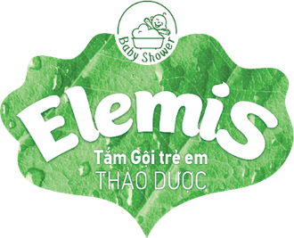

HĂM DAVùng tã và các nếp gấp

GỢI Ý BỘ SẢN PHẨM
 +
+
✔ CẦN THIẾTTắm gội Elemis + Kem bôi da ElemisCả bộ (tắm 200ml + kem) 265.000đ

＋ KHUYẾN NGHỊ DÙNG THÊMDầu massage Oriky — dưỡng da sau khi hết hămĐủ 3 món 400.000đ
SẢN PHẨM → VẤN ĐỀ ĐƯỢC GIẢI QUYẾT
Tắm gội thảo dược Elemis Từ sơ sinh
200ml150.000đ350ml210.000đ500ml275.000đ
- Làm sạch chỗ da đỏ không cần kỳ cọ
- Hỗ trợ giảm vi khuẩn — chỗ hăm không bị nhiễm trùng
- Khử mùi mồ hôi ở ngấn cổ, nách
Kem bôi da Elemis Từ sơ sinh
30g115.000đ
- Lớp “áo mưa” mỏng: nước tiểu, phân không ngấm vào da; nếp gấp bớt cọ xát
- Làm dịu đỏ, rát (rau má)
- Giữ nước bên trong da — da mềm, không nứt
Dầu massage Oriky Từ sơ sinh
60ml135.000đ
- Bù lớp dầu tự nhiên da bị mất sau đợt hăm → da mềm, không khô bong, hăm khó quay lại
⚠ KHUYÊN ĐI KHÁM, ĐỪNG BÁN — KHI
Da trợt, chảy dịch, mụn mủ, mùi hôi, lan nhanh; bé sốt, quấy nhiều; đỏ tươi có chấm nhỏ xung quanh (nghi nấm) → khuyên đi khám trước, dùng sản phẩm duy trì sau.
Sell-out kit theo vấn đề da bé · Công ty TNHH Dược Khoa Xanh
1
LÀM SẠCHtắm & vệ sinh khi thay tãTắm gội thảo dược Elemis Từ sơ sinh
200ml150.000đ350ml210.000đ500ml275.000đ


Men đu đủ (papain) · Chanh
Làm sạch chỗ da đỏ mà không cần kỳ cọ. Men đu đủ giúp bụi bẩn, mồ hôi, da chết bám trên da mềm ra và trôi đi khi tắm; chanh làm sạch nhẹ. Da đang đỏ mà chà xát là càng rát.


Chè xanh · Sả chanh · Kinh giới · Tràm gió
Giảm vi khuẩn ở vùng hăm — chỗ đỏ không bị nhiễm trùng, nổi mụn mủ. Các thảo dược có tính kháng khuẩn tự nhiên, hỗ trợ làm sạch vi khuẩn khi tắm. Vùng hăm vừa trầy, vừa ẩm, vừa bí nên vi khuẩn sinh sôi nhanh hơn da lành.
★ ĐIỂM MẠNH KHI KHÁCH SO SÁNH
1 chai lo 3 việc: làm sạch không kỳ cọ · hỗ trợ giảm vi khuẩn · khử mùi mồ hôi (diệp lục tố). Dr.Papie, Kutieskin cũng là nước tắm thảo dược, nhiều lá trùng nhau; Elemis có thêm chanh (làm sạch nhẹ) và tinh dầu mùi (làm dịu da). “Chỗ hăm đang đỏ thì mẹ đừng kỳ cọ. Nước tắm này có men đu đủ giúp chất bẩn tự trôi, thêm thảo dược hỗ trợ kháng khuẩn cho vùng tã hay ẩm bí.”
1 chai lo 3 việc: làm sạch không kỳ cọ · hỗ trợ giảm vi khuẩn · khử mùi mồ hôi (diệp lục tố). Dr.Papie, Kutieskin cũng là nước tắm thảo dược, nhiều lá trùng nhau; Elemis có thêm chanh (làm sạch nhẹ) và tinh dầu mùi (làm dịu da). “Chỗ hăm đang đỏ thì mẹ đừng kỳ cọ. Nước tắm này có men đu đủ giúp chất bẩn tự trôi, thêm thảo dược hỗ trợ kháng khuẩn cho vùng tã hay ẩm bí.”
2
XỬ LÝ VẤN ĐỀchắn · làm dịu · hỗ trợ kháng khuẩnKem bôi da Elemis Từ sơ sinh
Tuýp 30g 115.000đ

Kẽm oxyd nano 2%
Như một lớp “áo mưa” mỏng cho da. Tạo màng mỏng phủ da, không cho nước tiểu, phân, độ ướt của tã ngấm vào — thứ trực tiếp làm da đỏ, rát. Ở ngấn cổ, nách: hai mặt da trơn hơn, bớt cọ xát. Bôi cả khi da chưa đỏ để phòng.

Rau má
Bớt đỏ, bớt rát sau khi thoa. Rau má làm dịu phản ứng kích ứng — thứ làm da đỏ lên và bé thấy rát, quấy.

Tinh dầu ngải cứu
Mát dịu khi thoa, hỗ trợ kháng khuẩn ở chỗ da đang trầy.
★ ĐIỂM MẠNH KHI KHÁCH SO SÁNH
1 tuýp làm 3 việc: chắn (kẽm oxyd) + làm dịu (rau má) + giữ ẩm (Aquaxyl). Sudocrem có kẽm oxyd chắn như Elemis nhưng không có rau má, Aquaxyl. Bepanthen thiên về dưỡng, không có lớp chắn kẽm. “Kem này vừa tạo lớp chắn như Sudocrem, vừa có rau má làm dịu đỏ rát, lại giúp da giữ ẩm — mẹ không cần mua 2–3 loại riêng.”
1 tuýp làm 3 việc: chắn (kẽm oxyd) + làm dịu (rau má) + giữ ẩm (Aquaxyl). Sudocrem có kẽm oxyd chắn như Elemis nhưng không có rau má, Aquaxyl. Bepanthen thiên về dưỡng, không có lớp chắn kẽm. “Kem này vừa tạo lớp chắn như Sudocrem, vừa có rau má làm dịu đỏ rát, lại giúp da giữ ẩm — mẹ không cần mua 2–3 loại riêng.”
3
NUÔI DƯỠNG & BẢO VỆgiữ ẩm · hăm khó quay lại
Kem bôi Elemis: Aquaxyl
Giúp da tự giữ nước bên trong — da mềm, không nứt khi cọ xát. Aquaxyl giúp da tự tạo chất giữ nước, lớp da ngoài cùng khít lại nên nước khó thoát ra.
Vừa “chắn ẩm” vừa “giữ ẩm”? Kẽm oxyd chắn cái ướt bẩn bên ngoài (nước tiểu, phân); Aquaxyl giữ nước sạch của da ở bên trong. Da nếp gấp nhìn ướt nhưng bên trong thiếu nước nên dễ nứt.

Tắm gội Elemis: Diệp lục tố · Chè xanh
Khử mùi mồ hôi ở ngấn cổ, nách — bé thơm tho sau tắm. Diệp lục tố và chè xanh còn giúp bảo vệ da trước nắng, bụi.
Dầu massage Oriky Từ sơ sinh
Chai 60ml 135.000đ


Dầu hạnh nhân · Hạt nho · Cám gạo
Da mềm, không khô bong sau đợt hăm — hăm khó quay lại. Ẩm ướt nhiều ngày làm da mất lớp dầu tự nhiên giữ nước, nên hết đỏ da hay khô, nứt. Ba loại dầu có chất béo giống lớp dầu đó — bôi vào để bù lại phần bị mất.
★ ĐIỂM MẠNH KHI KHÁCH SO SÁNH
3 loại dầu thực vật bù lại lớp dầu tự nhiên cho da. Johnson’s là dầu khoáng (phủ ngoài da, không bổ sung chất béo giống của da); Chicco có dầu cám gạo. “Hết hăm da bé hay khô, mẹ massage dầu này để da mềm lại, lần sau đỡ bị.”
3 loại dầu thực vật bù lại lớp dầu tự nhiên cho da. Johnson’s là dầu khoáng (phủ ngoài da, không bổ sung chất béo giống của da); Chicco có dầu cám gạo. “Hết hăm da bé hay khô, mẹ massage dầu này để da mềm lại, lần sau đỡ bị.”
CÁCH DÙNG THEO TÌNH TRẠNG
PHÒNG HĂM — da bé bình thường
- Pha 1ml Elemis : 1 lít nước 36–37°C (chậu 5 lít → 5ml). Tắm hằng ngày, mở nếp gấp rửa kỹ, lau thật khô.
- Mỗi lần thay tã: lau sạch → thấm khô → thoa lớp kem mỏng phủ kín vùng tã.
ĐANG BỊ HĂM
- Vẫn tắm hằng ngày như trên.
- Thay tã (nhất là khi đi nặng): rửa bằng chậu nhỏ pha cùng tỉ lệ (VD 2ml : 2 lít), thấm khô rồi mới bôi kem.
- Kem: lớp mỏng phủ kín, mát-xa nhẹ — vùng tã mỗi lần thay tã, vùng ngấn 2–3 lần/ngày.
SAU KHI HẾT HĂM — dưỡng da
- Quay lại chế độ phòng hăm; thoa dầu Oriky lên vùng da khô, mát-xa nhẹ (trước hoặc sau tắm).